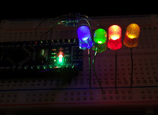

Introduction¶
An embedded library for Python to control LEDs. It uses a non-blocking approach and can control LEDs in simple (on/off) and complex (blinking, breathing and more) ways in a time-driven manner.
This is a pure Python port of my JLed C++ library.
Features¶
non-blocking
effects: simple on/off, breathe, blink, candle, fade, user-defined
supports inverted polarity of LED
easy configuration using fluent interface
can control groups of LEDs sequentially or in parallel
supports CircuitPython and MicroPython
Usage Example¶
Test JLed interactively in a CircuitPython REPL:
Adafruit CircuitPython 7.3.3 on 2022-08-29; Raspberry Pi Pico with rp2040
>>> import board
>>> from jled import JLed
>>> led=JLed(board.LED).breathe(500).delay_after(250).repeat(5)
>>> while led.update(): pass
This creates a JLed object connected to the builtin LED (board.LED), with a
breathe effect that is repeated 5 times. Each iteration is followed by a delay
of 250 ms, before starting again. By calling led.update() periodically,
the LED gets physically updated. Alternatively play(led) can be call in the
REPL as a shortcut. Once finished, call led.reset() before playing the
effect again.
Cheat Sheet¶

Installation¶
On supported GNU/Linux systems like the Raspberry Pi (with Adafruit-Blinka), you can install the lib locally from PyPI. To install for current user:
pip3 install circuitpython-jled
To install system-wide (this may be required in some cases):
sudo pip3 install circuitpython-jled
To install in a virtual environment in your current project:
mkdir project-name && cd project-name
python3 -m venv .venv
source .env/bin/activate
pip3 install circuitpython-jled
Installing to a Connected CircuitPython Device¶
Create a directory called jled on the device and copy the following files
into this directory: jled.py, hal_pwm_circtuitpython.py,
hal_time_circuitython.py, __init__.py`. Optionally also copy one of the
examples to main.py to the root of the filesystem. The overall structure
is:
/
├─ main.py
└─ jled
├─ __init__.py
├─ jled.py
├─ hal_pwm_circuitpython.py
└─ hal_time_circuitpython.py
Installing to a Connected CircuitPython Device with Circup¶
TODO
Installing on a MicroPython device¶
Create a directory called jled on the device and copy the following files into this directory:
jled.py, hal_pwm_micropython.py, hal_time_micropython.py,
__init__.py. Optionally also copy one of the examples to main.py to the
root of the filesystem. The overall structure is:
/
├─ main.py
└─ jled
├─ jled.py
├─ __init__.py
├─ hal_pwm_micropython.py
└─ hal_time_micropython.py
To reduce memory consumption, Python source files can be compiled to binary
mpy format using the mpy-cross
tool. For convenience, a script is provided here (see scripts/install_mp.sh
to compile and copy jled to a connected device.
Documentation¶
API documentation for this library can be found on here.
Rebuild the documentation with sphinx-build -E -W -b html . _build/html
in the docs directory. Run pip install ".[optional]" before to install
build-time dependency Sphinx
Tests¶
Unit tests (using https://docs.pytest.org) are provided, run the tests with:
$ pip install ".[optional]"
$ pytest
To run the pre-commit-hook locally, run pre-commit run --all-files
Table of Contents¶
API Reference
- jled
JLedJLed.blink()JLed.breathe()JLed.candle()JLed.deinit()JLed.delay_after()JLed.delay_before()JLed.fade()JLed.fade_off()JLed.fade_on()JLed.forever()JLed.is_foreverJLed.is_runningJLed.low_active()JLed.max_brightness()JLed.min_brightness()JLed.off()JLed.on()JLed.repeat()JLed.reset()JLed.set()JLed.stop()JLed.update()JLed.user_func()
JLedSequenceplay()
Other Links